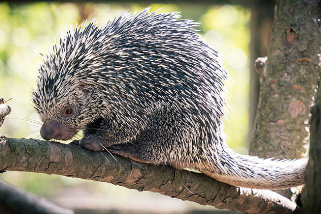

PUERCO ESPIN
FAUNA

Es un mamífero roedor.
Es fácilmente identificable por sus características
púas que cubren su piel. Cuando se siente amenazado reacciona erizando las espinas.
En algunos casos pueden proyectarse y clavarse en el intruso o depredador..
principal